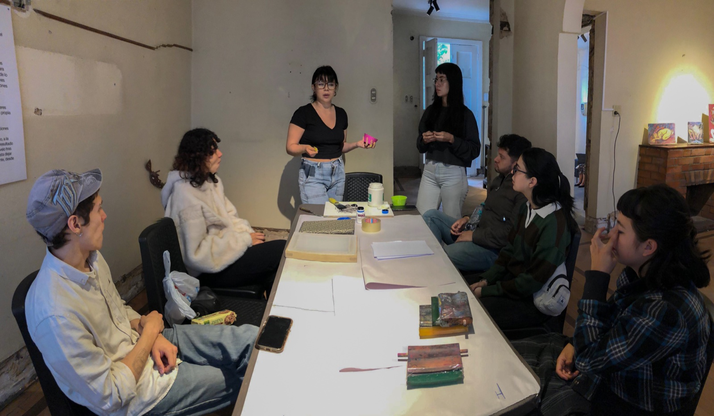
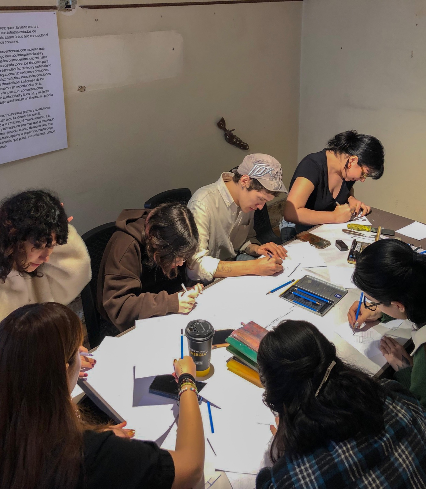
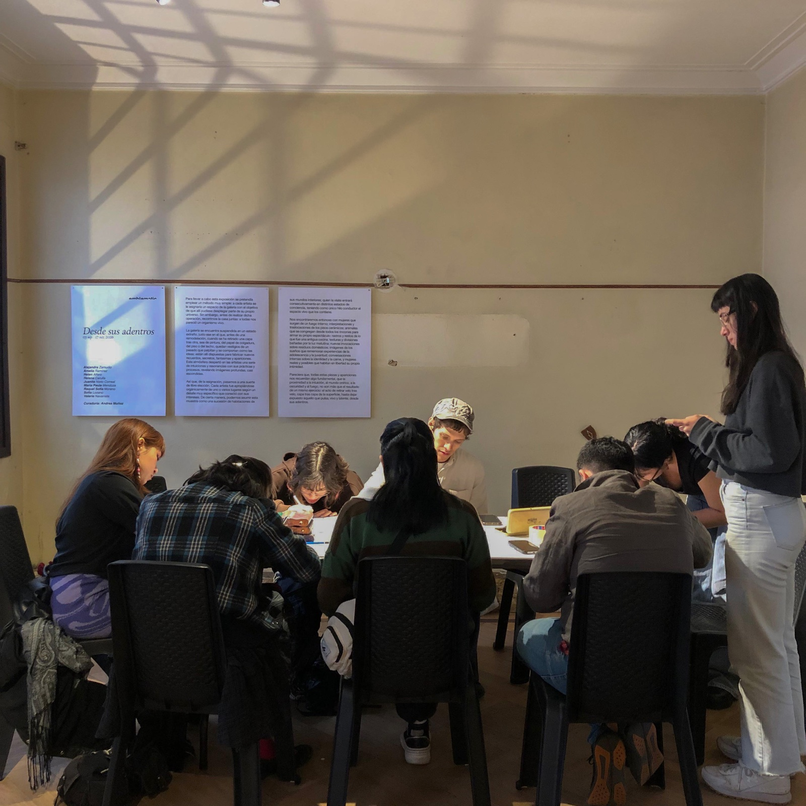
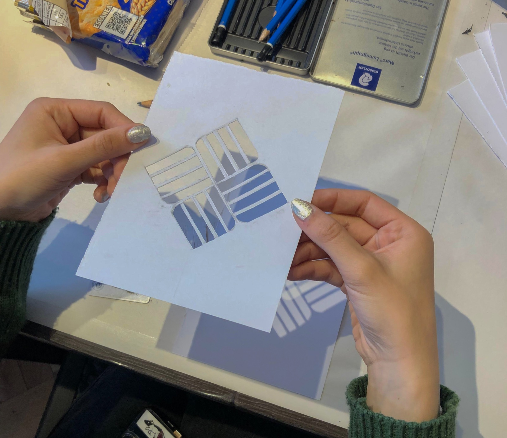
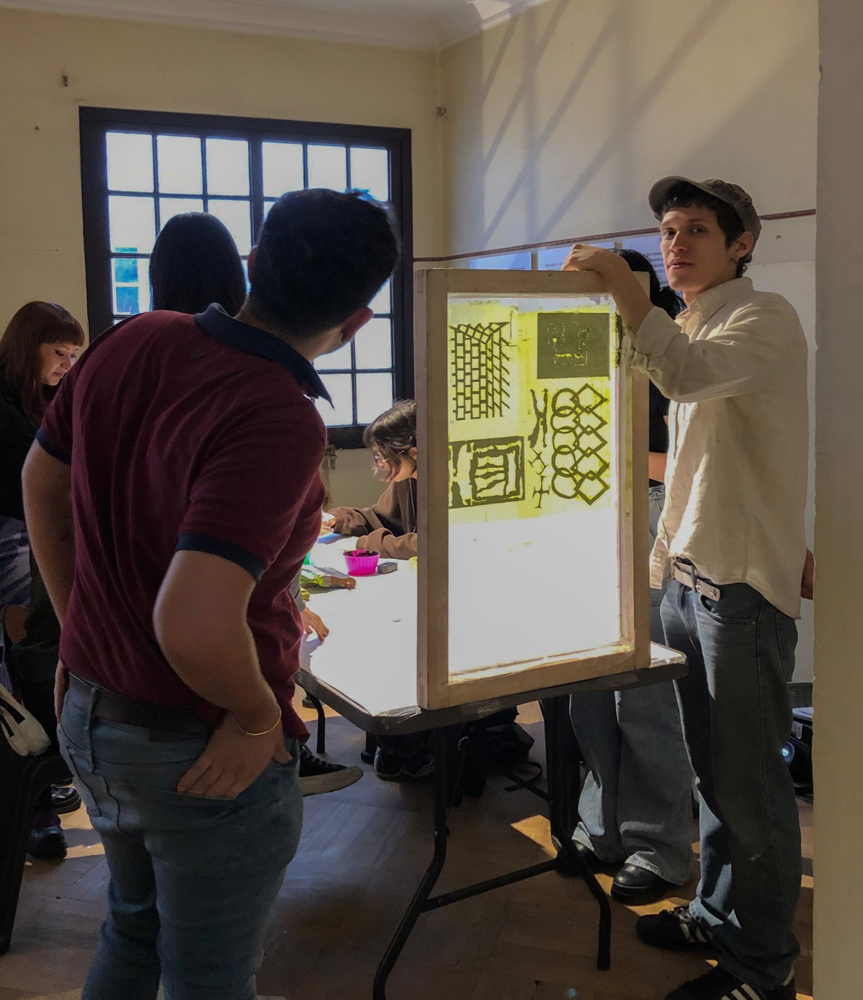
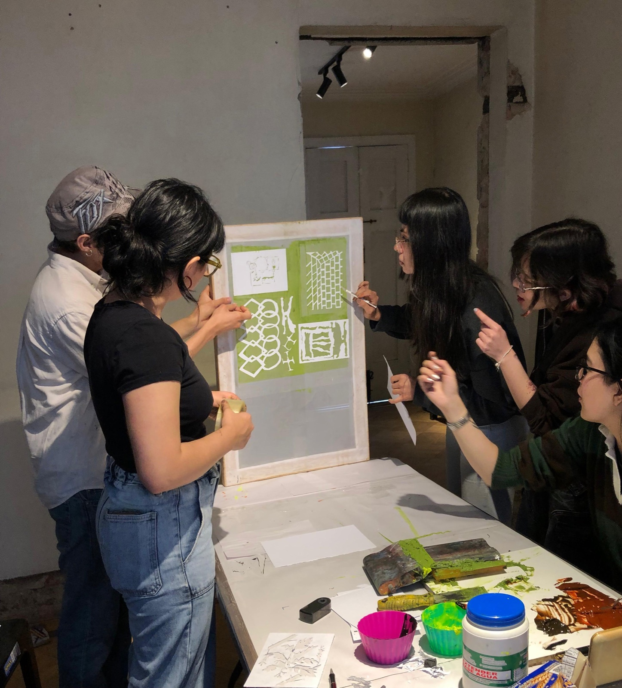
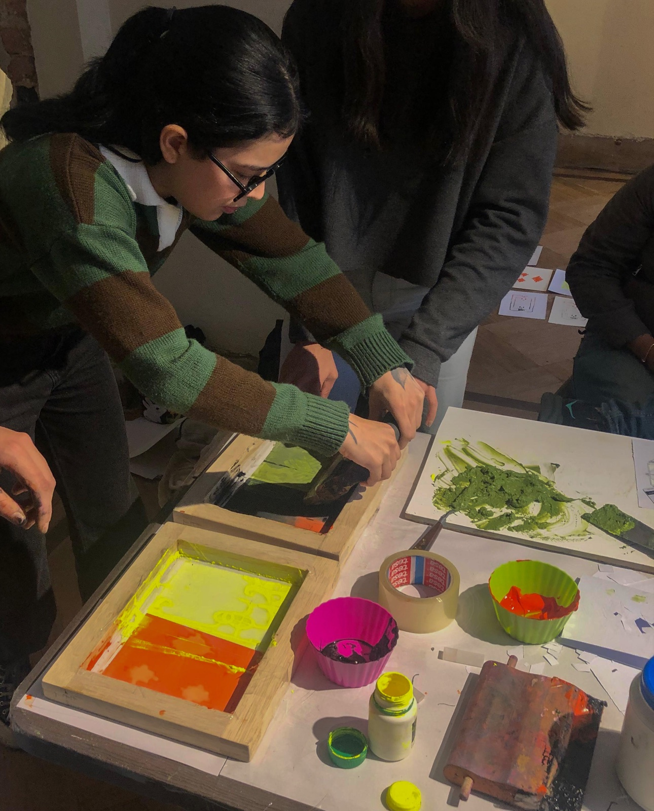

superficies de paso
3 de Octubre del 2026
Emblematic Art Gallery - Bogotá.
Primer encuentro nacional de artistas mujeres.
“Desde sus adentros”. Curaduría de Andrea Muñoz.
La celosía y el sifón son superficies caladas que regulan lo que puede atravesar un umbral. La celosía, ese tablero calado que cierra ventanas, balcones o fachadas, deja pasar la luz y el aire mientras bloquea la mirada directa desde afuera, dosificando la privacidad de lo doméstico. El sifón hace lo mismo, pero al revés: ubicado en el suelo, deja pasar el agua y retiene lo que no debe salir, drenando lo íntimo de la casa hacia lo público del alcantarillado.
Ambos funcionan como un stencil: existen por y desde el molde. Son objetos matriz, pensados para repetirse y existir en multiplicidad, y su forma es la de lo que dejan pasar. Una filtra la mirada; el otro filtra el desecho. Una está en la pared; el otro, en el piso. Pero los dos son maneras de decidir qué se deja pasar y qué se retiene en el límite entre lo privado y lo público.
De ahí parte esta actividad: un juego de sombras a partir de celosías y sifones recortados en papel. Al proyectar su sombra, ambos patrones —flores, rejillas, tramas geométricas— se vuelven casi indistinguibles entre sí. Esa ambigüedad es el punto de partida para pensar en un espacio delimitado no por muros, sino por la sombra misma: algo intocable que, sin embargo, marca un adentro y un afuera.
Este taller fue impartido por María Paula Mendoza y Sofía Lozano en el marco del Primer encuentro nacional de artistas mujeres en Emblematic Art Gallery, con la exposición “Desde sus adentros”, curada por Andrea Muñoz.






